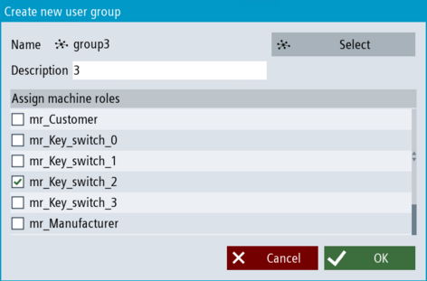

Introduction
If you want to create a new central user group, you can use the "Create central user group" dialog.
|
Note
|
Central user groups only represent user groups with the same name on the central user management.
This is required to assign machine roles of the local system to central user groups. You cannot use these groups to display/manage the configuration of the central user management.
|
Requirement
Procedure
-
In the "Setup" operating area, call the user management via the "Security > User management" softkeys.
-
Click the "User groups" softkey. Click on "+ User group" on the overview page to create a new central user group. A pop-up dialog box opens.

Creating a central user group
-
Click on "Select" to select a name for the central user group from the central UMC server. Click "OK" to confirm the selection.
-
If you have already created machine roles, select one machine role or several machine roles to which the central user group should be assigned.
The members of this user group are given the highest access level of this or these machine role(s). If no machine roles has been assigned to the user group, the members of the user group do not have any rights (Keyswitch0).
-
If you have already created central users, select users who are members of this central user group.
-
Click on "OK" to add the new central user group to the list of user groups. If necessary, create additional central user groups by repeating steps 2-6.
|